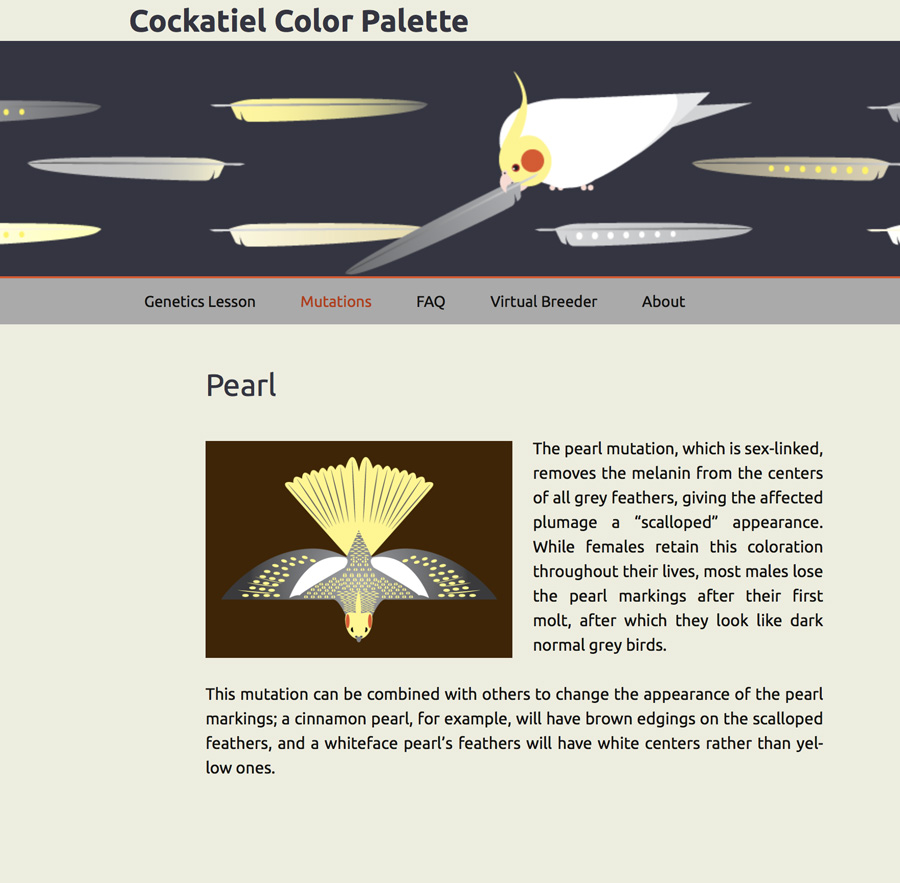

Coding Portfolio
Cockatiel Color Palette
I created the Cockatiel Color Palette as a resource for cockatiel breeders who want to learn more about genetics, their birds’ color mutations, and the potential offspring types that different pairings can produce. In addition to the website, which I created in WordPress, I developed a genetics calculator which is available in Apple’s App Store and has been downloaded over 2700 times. I used Xcode and Objective C to create this program, which uses an algorithm based on the principles of genetic inheritance to predict the offspring types of a pair of cockatiels specified by the user.